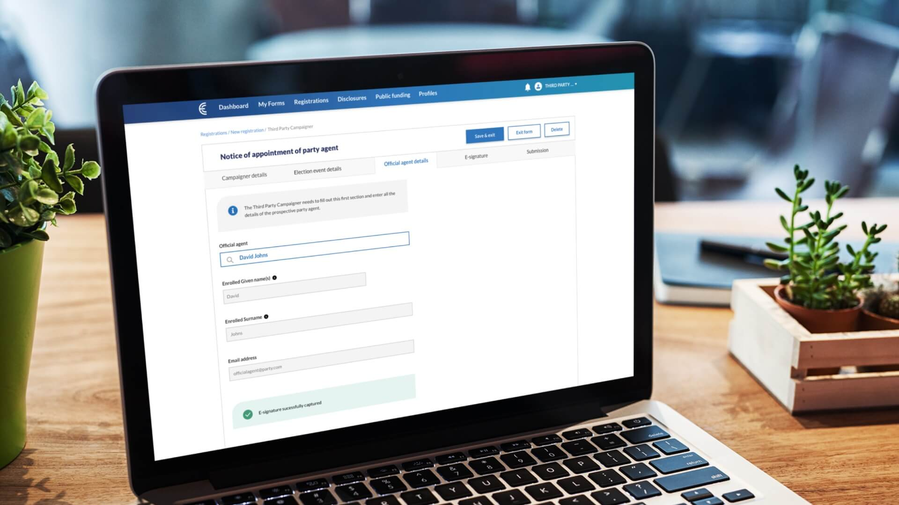
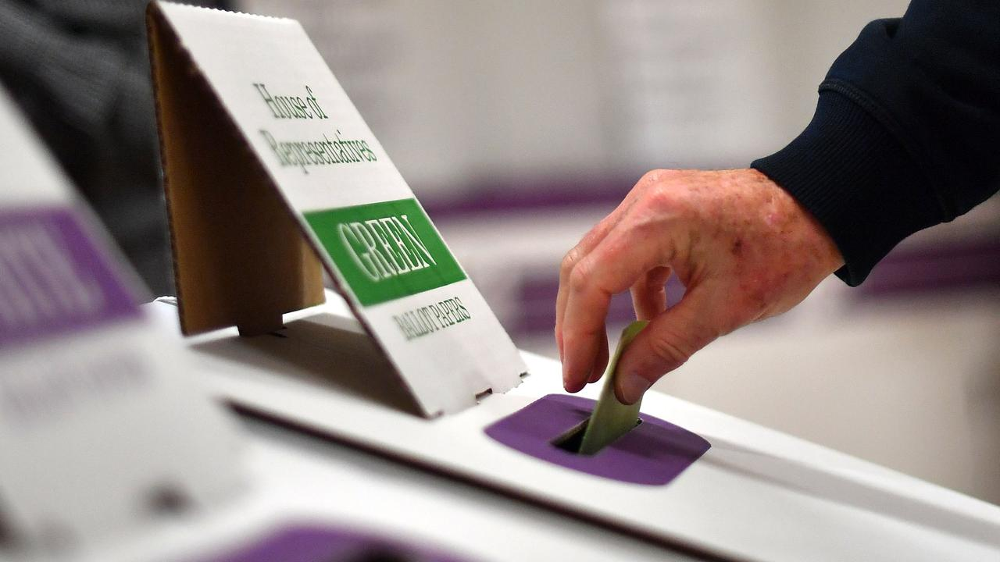
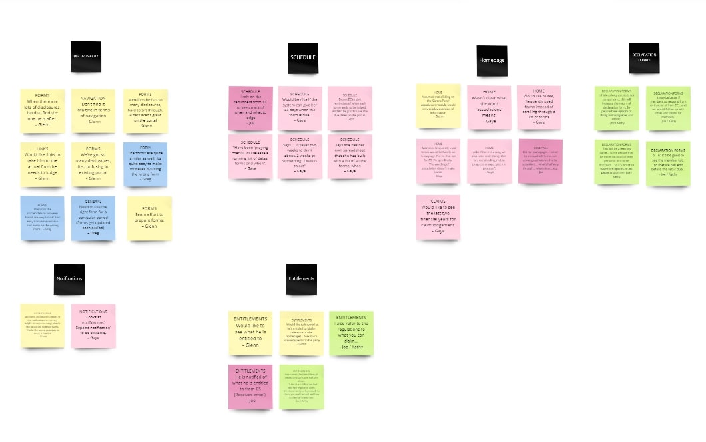
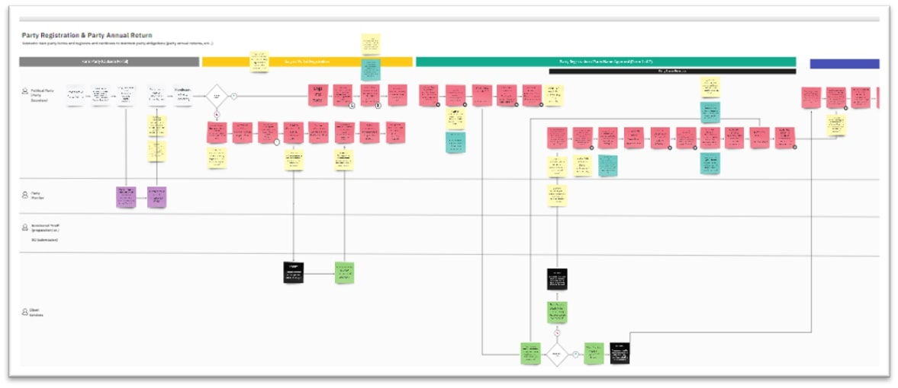
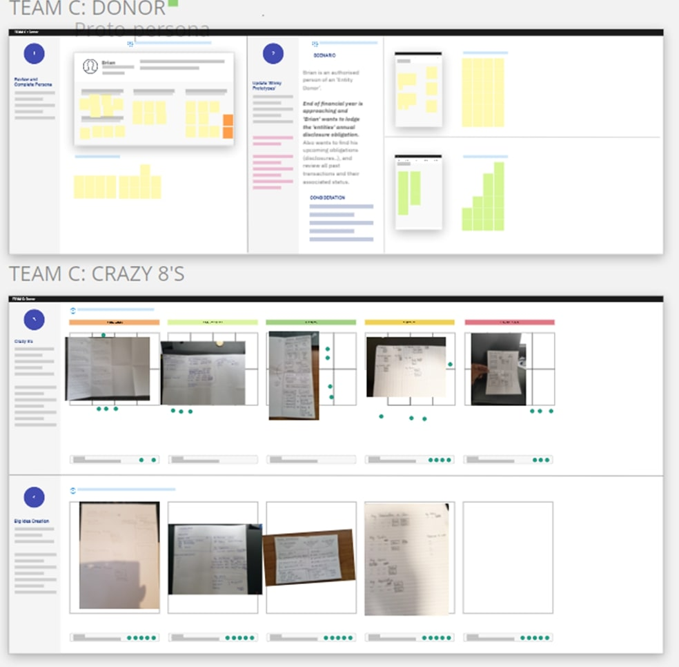
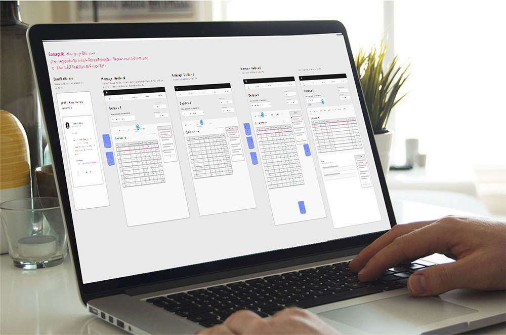

Explore Other Projects


Let's Work Together 👋
Reach out to discover how we can collaborate.
Contact MeRole: Product Designer (UX/UI)
Industry: Government
Tools: Sketch, Miro
Date: Sept 2021 - Nov 2021
Designing an intuitive online portal that replaces NSW Electoral Commission's existing paper-based disclosure & funding system

NSW Electoral Commission had a vision to replace their paper-based disclosure & funding system with an electronic system.
Three challenges this project aimed to address:
How might we build an online system that is intuitive, responsive and removes regulation complexity while supporting all users to perform their tasks efficiently within their respective end-to-end workflow?

We adopted Affinity Mapping as a means to understand large data sets and uncover patterns when clustering related information. The individual clusters helped us to surface key themes that are common across most of the stakeholders we interviewed. Those themes were later assessed by insight type such as pain point and future opportunity.
We created user flows to demonstrate the pathways a user takes to complete certain tasks and mapped out each step the user takes from initial entry point until final interaction. We created user flows such as Party registration, party agent appointment, claim and so on.

Affinity Diagram

user Flow
A co-design session was held with internal stakeholders to refine the user flows & wireframes. The session was divided into three teams, each addressing one of three scenarios. Each team collaborated on development of personas and the ideal layout of the future dashboard for their respective persona.
With identified user flows, we created low-fidelity wireframes on Miro demonstrating the ideal layout of an interface based on business requirements, user needs and goals.
We conducted usability testing with key stakeholders to identify and address usability issues in the refined wireframes. This approach assessed user actions (clicks, pauses, and interactions) against predefined tasks and interface guidelines. Prior to testing, we interviewed 7 stakeholders, including 3 party agents, 2 independent elected members, 1 registered officer, and 1 party secretary, to gather insights into their needs and interactions with the online portal.

co-design miro board

usability Testing
The new system enables electoral stakeholders to efficiently complete tasks such as party registration, agent appointments, and claims processing within an intuitive, responsive interface. This digital transformation not only improved operational efficiency for the NSW Electoral Commission but also empowered users by reducing regulatory complexity and creating a seamless experience tailored to their specific needs.
Reach out to discover how we can collaborate.
Contact Me